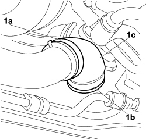

1048B20 AIR SUPLY HOSE BETWEEN HEAT EXCHANGER AND RIGID PIPE - REPLACE
- Path
- Procedures > 10 ENGINE > 1048 ENGINE AIR SUPPLY CIRCUIT > 1048B PRESSURE AIR CIRCUIT > 1048B20 AIR SUPLY HOSE BETWEEN HEAT EXCHANGER AND RIGID PIPE - REPLACE
- Kind
- repair procedure (removal / refitting; the operation number is the code)
- Applies to
- engines: 1.9 JTD 8V; all production periods
- Interactive page
- https://sloeber94.github.io/elrnDB-fDbl/en/#/223000128
Applies to: engines: 1.9 JTD 8V; production: da 12/03; only with equipment: MY 2005
 Removing
Removing
 Refitting
RefittingPosition the vehicle on a lift.
Op. 7055B54 PROTECTION/GUARD UNDER ENGINE - R.R.
1. Use the appropriate tool to remove retaining collars (1a) and (1b), then disconnect sleeve (1c) carrying air from the heat exchanger and to the rigid pipe and remove it from the vehicle.

Applies to: engines: 1.9 JTD 8V; production: da 12/03; only with equipment: MY 2005
Refitting
Removing- Connect the air supply hose from the heat exchanger to the rigid pipe and secure it using new bands.
Op. 7055B54 PROTECTION/GUARD UNDER ENGINE - R.R.
Remove the vehicle from the lift.